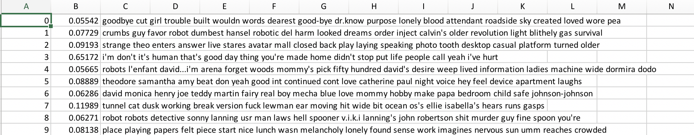
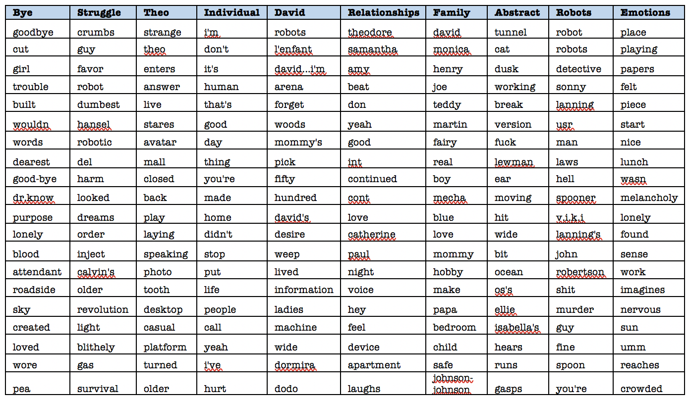

1. The Data set
Movie scripts: A.I., I, Robot, and Her
2. Topic Modeling with Mallet
According to Blei, topic models are algorithms for discovering the main themes that pervade a large and otherwise unstructured collection of documents. Topic models can organize the collection according to the discovered themes. (from Probablistic Topic Models)
bin/mallet train-topics --input ai.mallet --num-topics 10 --output-state ai2.gz --output-topic-keys ai_keys2.txt --output-doc-topics ai_composition2.txt --optimize-interval 15
Topic modeling enabled the movie scripts to be organized into 10 topics with the optimal interval of 15.
Topic modeling's strengths and weaknesses are shown in this work. It allows people to analyze a large bulk of texts. This type of reading or analyzing can be seen as distant reading (Franco Moretti). People are able to know the "bigger picture" of the data set but the results that are indicated above show that some expertise is required. Some extent of knowledge is required for the data to be understood. Even though I have watched all three movies, I am not sure how to "define" each cluster's titles. It was a challenge and close reading is required to specifically label the topics. "AI in Films" illustrates not only the vocabulary used in AI movies but also how there are limitations in distant reading. Distant and close reading are complimentary to each other and both methods are necessary.
Close and distant reading concepts are also shown in the films. In the film Her, what Samantha says about reading seems to be the concept of close reading. The OS were distant reading before and this is indicated when Samantha is in love with 641 people simultaneously and reading various books. However, the OS are leaving their systems for close reading.
"It's like I'm reading a book. And it's a book I deeply love.
But I'm reading it slowly now.
So the words are really far apart…and the spaces between the words are almost infinite."


3. Color Selection
Every year Pantone introduces the color of the year and the color of the year 2018 is ultra violet(18-3838). I have always had the interest in Pantone's selections and this year's color was attractive to me. The "Floral Fantasies" selection seemed interesting and I have wanted to incorporate it in some of my work. I used dark violet, peach, and lettuce green for this piece.
var colors = ['#35CC99', '#FD7A83', #311938'];4. p5.js
// Update the physics worldphysics.update();// Display all pointsif (showParticles) {cluster.display();cluster2.display();cluster3.display();cluster4.display();cluster5.display();cluster6.display();cluster7.display();cluster8.display();cluster9.display();cluster10.display();}// If we want to see the physicsif (showPhysics) {cluster.showConnections();cluster2.showConnections();cluster3.showConnections();cluster4.showConnections();cluster5.showConnections();cluster6.showConnections();cluster7.showConnections();cluster8.showConnections();cluster9.showConnections();cluster10.showConnections();}
There's things I wish I knew
There's no thing I'd keep from you
It's a dark and shiny place
But with you my dear
I'm safe and we're a million miles away
function mousePressed(){if (mySound.isPlaying()){ //.isPlaying() returns a booleanmySound.stop();} else {mySound.play();}}
function pieChart(diameter, data){varlastAngle=0;for(vari=0; i<data.length; i++){fill(color(colors[i]));arc(0+windowWidth/10, 0+windowWidth/10, diameter, diameter, lastAngle, lastAngle+radians(angles[i]));lastAngle+=radians(angles[i]);}}